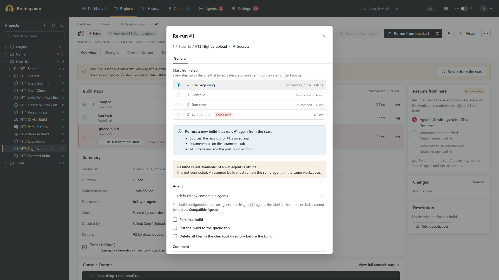
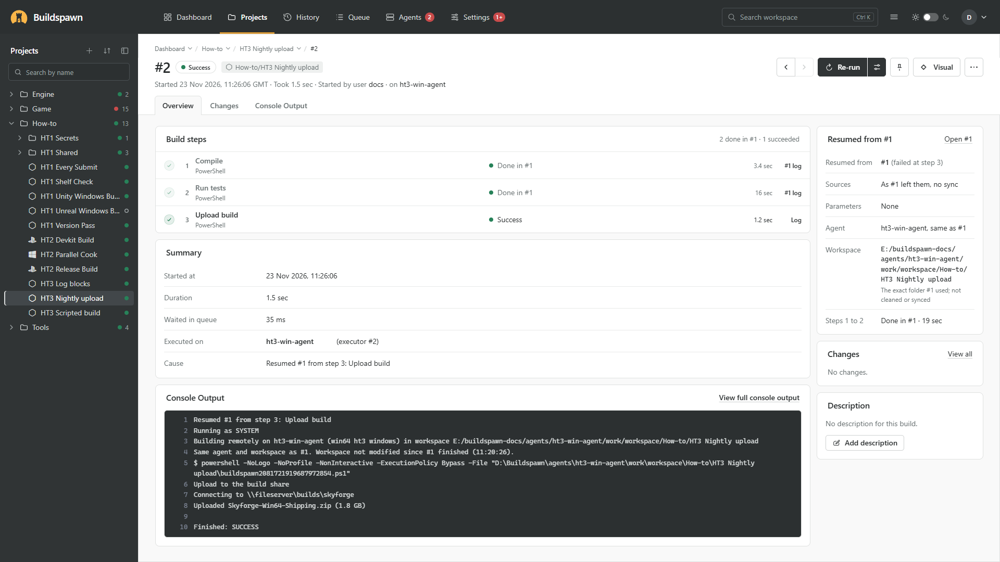

Re-run a failed build from the failing step
When a build fails near the end, fix the problem and resume it at the failed step, so the steps that already passed don't run again.
Resume works for build configurations that use Perforce from version 1.9.3. In older versions, the resumed build failed at its first step with a NullPointerException. If you see that, upgrade the server.
Before you start
- You have the Build permission on the build configuration, for example through the Developer role.
- The build has failed, and you know why. See Find out why a build failed.
- You have fixed the cause outside the build, for example the file share is back online or the device kit has restarted. Resume runs the same code again; it does not pick up new changes.
Pick the right tool:
- Resume: same agent, same workspace, no new sync, starts at a step you choose. Fastest after a problem with the machine or the network.
- Re-run: a new build of the same sources and parameters from the start. Use it when the workspace was used by another build since, or to check whether a failure is flaky.
- Re-run with changes: the same build, but with one thing different, such as a parameter, a changelist or a shelf.
Steps
Resume from the failed step
- Open the failed build.
- Look at the Resume from here card on the right. It checks three things and shows a green tick for each:
- the agent is online;
- the workspace still exists;
- no other build has used the workspace since.
- Click Resume from step N at the top of the page. The same button sits on the failed step in Build steps, and Resume from here in the card does the same.
- The new build appears in the queue. Click it when it starts.

Resume from an earlier step
- Open the failed build and click the sliders button beside Re-run. Its tooltip says Re-run with changes….
- Under Start from step, pick a step. You can pick The beginning, any step that passed, or the step marked Failed here. Later steps can't be start points.
- Read the blue box under the list. It sums up what will happen: the sources, the parameters, the agent and workspace, and which steps show as done.
- Click Re-run at the bottom of the dialog.

Re-run from the start
- Open the build and click Re-run (on a failed build that can't resume, it says Re-run from the start).
- To change something first, click the sliders button instead, change a value on the General, Parameters, Changes or Shelved changes tab, and click Re-run.
Check it worked

- The new build has a new number. Its Cause says Resumed #1 from step 3.
- The skipped steps show Done in #1. Click #1 log to read their output.
- The Resumed from card shows the agent and workspace, which are the same as the original's.
- The first lines of its console say Same agent and workspace as #1. Workspace not modified since #1 finished.
Troubleshooting
| Problem | What to do |
|---|---|
| The Resume button is grey and the main button says Re-run from the start. | A check in the card failed: the agent is offline, the workspace was deleted, or another build used it. Bring the agent back online and try again, or re-run from the start. |
The resumed build of a Perforce build configuration fails at its first step with a NullPointerException. | The server is older than 1.9.3. Resume with a Perforce root works from 1.9.3 on. Upgrade the server, then resume again. |
| The resumed build fails the same way. | The cause is still there, or it is in the code. Resume does not sync new changes: once you have submitted a fix, use Re-run with changes and choose Latest, or start a new build. |
| You want a step to try again on its own next time. | Open the step in Settings › Build Steps and set Retry on failure under Execution. See Resume and retry. |
| The Resume button is missing. | The build passed, or you don't have the Build permission. Ask a project administrator for the Developer role. |
Next steps
- Resume a build: every reason a resume is refused, and how it works with Perforce, Parallel blocks and the Retry trigger.
- Resume and retry: all the rules, and retrying a step automatically.
- Re-run and Re-run with changes: every tab of the Re-run dialog.
- Find out why a build failed.